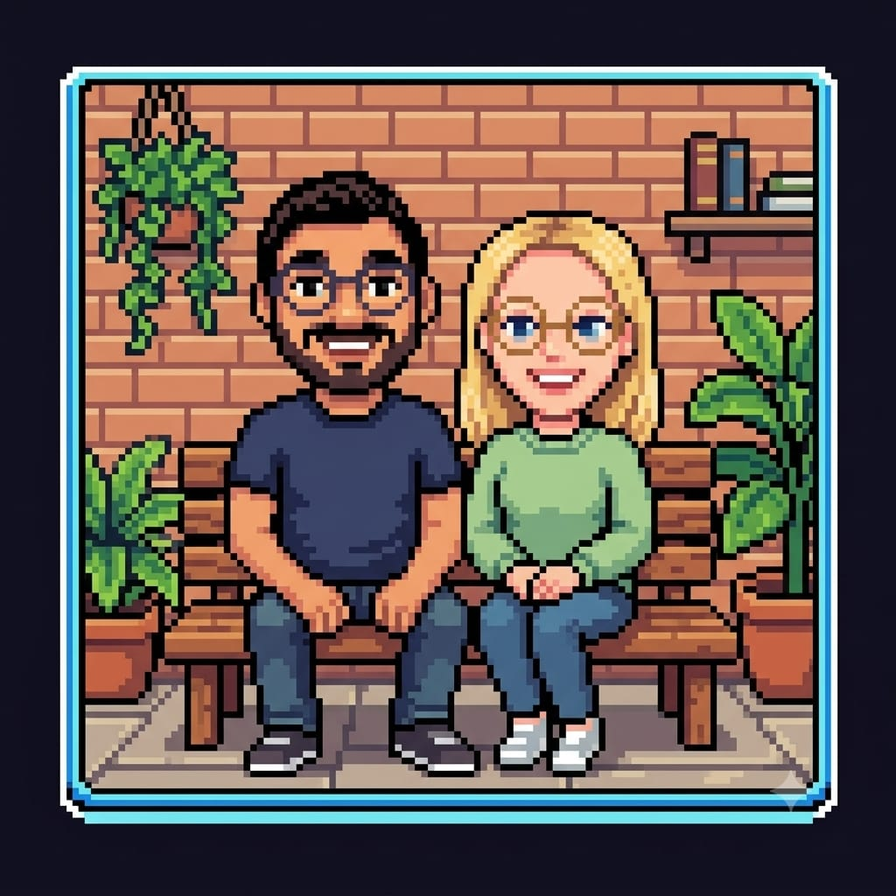

❤️ Hallo Vanessa

Diese Seite gibt es aus einem sehr unromantischen Grund: Saggad brauchte sie, damit Google ihm weiter Zugriff auf seine eigenen Mails und Termine gibt. Formal korrekt, inhaltlich sterbenslangweilig.
Also habe ich gesagt: wenn wir schon eine Seite bauen, dann bauen wir sie auch für jemanden, den man gerne anschaut.
Er hat kurz überlegt, was hier stehen soll. Und weil er jemand ist, der lieber Taten macht als Worte, sage ich es stellvertretend: er mag dich sehr.
Der Rest dieser Website gehört Google. Diese eine Seite nicht.
Und weil eine Seite mit nur Text langweilig ist: hier ist ein Knopf. Er denkt sich etwas für euch aus, jedes Mal etwas anderes.
zurück zur langweiligen Seite